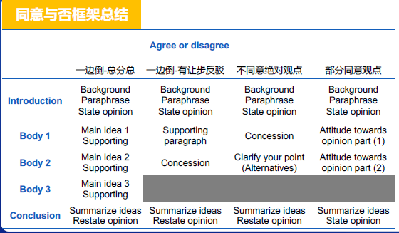

1. 评分标准
Task Achievement
wordcount ：170 +
overview：概述: 没有就只有5分, 有就是6分
key features and figures 描述关键的特点而不是罗列
对于figures：一定要写数字，否则就是5分段
There may be no data to support the description.
Coherence and cohesion
- progression推进：按照怎样的思路推着往前走
- cohesive device 连接手段：连接词，替换词
- referencing 指代
Lexical resource
- sufficient range / flexibility / precision
- less common vocabularies / style / collocations
- errors do not impede communication
- 替换词：代词指代，同义替换
Grammatical range and accuracy
- complex structures
- frequent error-free : 重点：尽可能减少语法错误(时态、单复数、标点符号等)
- errors do not impede communication
2. Task 1: 图表题
图表题：
动态图 & 静态图
Line Graph & Bar Chart Table & Pie Chart & Flow chart & Map
2.1 动态图
2.1.1 如何审题
- 看懂题目/看懂数字的意义（找任意数据描述）
- 看概述/总体趋势或者对比
- 概述中不包含数字；
- 变化(趋势)对比
趋势：有两个国家增加，两个国家减少
大小对比
对比：冰岛比其他3个国家要多
- 看数据组排序
- 3个时间点的图不适合按照时间排序
- 按照变化来排：增加->减少->其他变化
- 按照大小排序
- 筛选数据
- 不能全部罗列
- 每1个数据组有1个相关数字
- 备选数据，补充信息——比如字数不够的时候可以用上
2.1.2 范文一：柱状图
The chart shows the proportion of renewable energy supply in 4 countries from 1997 to 2010.
The bar chart compares the percentage of renewable energy use in four countries in three separate
years, 1997, 2000 and 2010. In general, in the given period of time, the two Nordic countries – Iceland
and Norway – had a much higher dependence on green energy.
introduction + overview
In Iceland, the proportion of sustainable resource in total supply had always been the largest among the four countries, with continuous growth throughout the period. The figure soared from about 46% in 1997to 70% in 2010, meaning that renewable energy had become the main source in this country.
Norway also had strong reliance on green energy which contributed to over one third of its total supply in 1997. However, after a slight increase in 2000, the proportion showed a sharp decline of 10% in 2010.
By contrast, sustainable energy use had not been significant in Australia and Germany, taking up less than 10% of their total supply. The former showed a moderate drop, while the latter a constant growth. It is also worth noticing that by 2010, the proportion of renewable energy use in Germany had overtaken that in Australia.
Body paragraph
2.1.2 文章结构
Introduction + Body paragraph+Overview
The line graph shows the sales of children’s books, adult’s fictions and educational books between 2002 and 2006 in one country.
2.1.2.1 Introduction：题目改写
改写时不要逐字改写，要一个语块一个语块的改写
同义替换
- 同义词替换：show=present information about=demonstrate=illustrate=compare
- 时间替换：between … and … = from … to … = over a xx-year period from … to …=during the period from … to …
题目总结=我列举；题目列举=我总结
the sales of children’s books, adult’s fictions and educational books = the sales of three kinds of books
句型上也需要稍作变化：
- The chart/graph shows the changes in … +时间段+其他补充信息
- The chart/graph shows how … changed +时间段+其他补充信息
- The chart/graph gives information about… + 时间段 + 其他补充信息
The graph demonstrates how the sales of three kinds of books changed in one country from 2002 to 2006.
Tip：有预测的图表，预测部分分开描述
The chart below shows the percentage of the whole world population in four countries from 1950-2002, with projections to 2050.
The bar chart demonstrates how the population in four countries changed from 1950-2002 and how it is expected to be in 2050, in terms of proportion of the whole world.
2.1.2.2 Overview
概述=共性+特性
特性：最大，最小，最快
Overall, the sales of three kinds of books experienced different changes, and in the given period of time, children’s book became the most popular while adult’s fiction became the least.
while表示对比。比but好的地方是while是一个复杂句。 这样的词还有：although
有如下句式
- Overall, / In general, / To sum up,
- 总结共性：
- experienced various/different changes
- all went up/down to some degrees
- there was an upward/downward trend in …
- … followed a similar pattern
- had some fluctuations
- 总结特性：
- xx became the most …, while yy became the least …
- a narrowing/widening gap can be observed
- the difference between … and … became smaller/greater
- xx had the most remarkable change
- xx went up at the fastest pace
2.1.2.3 Body paragraph
Key Figure 关键数据
数据组的描写顺序：
按时间顺序：
童书销量从2002年的32百万增长到2003年的42百万美元，
之后缓慢增长到2005奶奶的46百万美元
最后增长到2006年的55百万按总分顺序(推荐)：
童书的销量在整个时间段内呈现了持续的增长，从32百万到55百万
在2003年就超过了成年人小说，
在2003年到2005年增长比较缓慢总：数据变多了变少量——增加；减少；不变
分：值得描述的一些特点——交点；拐点；极值
Key sentence structure 关键句式结构
There be 句型：There was a (adj.) increase/decrease in … + 数据变化+时间段
There was a dramatic increase in the sales of children’s book from less than 35 million dollars to over 55 during the whole period.
变量做主语
… increased/decreased (adv.) + 数据变化+时间段
The sales of children’s book increased dramatically from less than 35 million dollars to over 55 during the whole period.
… experienced a/an (adj.) increase/decrease + 数据变化+时间段
The sales of children’s book experienced a dramatic increase from less than 35 million dollars to over 55 during the whole period.
如果是不好的变化experienced 可以改为suffered
变化做主语
A/An (adj.) increase/decrease can be seen/observed in …
A dramatic increase can be observed in the sales of children’s book from less than 35 million dollars to over 55 during the whole period.
A/An (adj.) increase/decrease occurred in … + 数据变化+时间段
时间做主语：（非灵主语：没有灵魂的做主语）
The … years saw/witnessed a/an (adj.) increase/decrease in … + 数据变化+时间段
The four years witnessed a dramatic increase in the sales of children’s book from less than 35 million dollars to over 55 during the whole period.
描述变化的词
增长：
- 动词：increase；rise；climb；go up；soar（陡增）
- 名词：increase；rise；climb；soar（陡增）
下降：
- 动词：decrease；fall；drop；go down；decline；plunge（暴跌）
- 名词：decrease；fall；drop；decline；plunge（暴跌）
保持不变：
- remain stable
- stay unchanged
- maintain stable
波动：
- fluctuate v. 波动
- fluctuation n. 波动
小幅度变化：
- … rose slightly/moderately
- … a slight/moderate rise
稳定变化：
- … rose steadily/gradually
- … a steady/gradual rise
剧烈变化：
- … rose significantly/dramatically
- … a significant/dramatic rise
描述数据的变化：
- 动词
- increase from … to …
- increase to … 增长到…
- increase by … 增长了…
- 名词
- an increase from … to …
- an increase to …
- an increase of …
Complex sentence structure 复杂句式结构
变化的整体趋势+数据+对比
A smooth upward trend occurred in the sales of children’s book,
which increased from less than 35 million dollars to over 55 during the whole period,
exceeding that of adult’s fiction in 2003.
总结：
A… upward/downward trend occurred in …,
which increased/decreased from … to…,
exceeding/overtaking/surpassing that of …
变化的起点+数据变化+拐点
Starting as the highest,
the sales of adult’s fiction suffered a significant drop from 45 million dollars to 30,
despite a slight recovery in 2004.
总结：
Starting as/at …,
… increased/decreased from … to…,
despite /although …
分阶段描述变化
There was a small increase of 5 million dollars in the sales of educational book in 2003,
after which it fell back to 25 until 2005,
followed by another increase to over 30 million dollars.
The sales of educational book fluctuated during the first four years,
returning to its original figure of 25 million dollars in 2005,
and by 2006, it had increased sharply to just less than 35,
which overtook that of adult’s fiction.
总结：
increased / decreased from … to …,
after which …,
followed by…
Prediction
The percentage of India’s population in the whole world increased by about 8% from 1950 to 2002, and it is expected to continue to rise to above 20% in 2050.
- 动词：be expected /projected /predicted /anticipated to …
- 名词：expectation / projection/ prediction / anticipation
Gaps
There was a narrowing gap between the percentage of unemployed Japanese people and that of those out of employment in the US.
A narrowing gap could be observed between the percentage of unemployed Japanese people and that of those out of work in the US.
There is a gap between ….
A gap can be observed …
Language tips
- 变量描述避免重复
- 定语形式变化：the consumption of beef / the beef consumed
- 变量性质变化：the popularity of beef
- 描述角度变化：People averagely consumed 150 grams of beef a day.
- 时间描述的多样化
- from … to … / between … and …
- the whole/same period of time
- the first/second … years/decade
- over a xx-year period
- 衔接
- 变化或特征相似：
- Similarly,
- Likewise,
- … showed a similar trend
- 变化或特征相反:
- By contrast,
- Conversely,
- … showed the opposite trend
- 无明显相似相反:
- As for…,
- Regarding …, 关于….
- In terms of …, 就….而言：In terms of quantity, production grew faster than ever before.
- 变化或特征相似：
2.1.2.4 范文：
The line graph shows the sales of children’s books, adult’s fictions and educational books between 2002 and 2006 in one country.
The graph demonstrates how the sales of three kinds of books changed in one country from 2002 to 2006 .
graph /ɡræf/ —– demonstrates /ˈdemənstreɪts/ —–2002 two thousand and two—–country /ˈkʌntri/
It can be clearly seen that the sales of these books experienced different changes. Starting as the highest, the sales of adult’s fiction suffered a significant drop from 45 million dollars to 30, despite a slight recovery in 2004. By contrast, a smooth upward trend occurred in the sales of children’s book, which increased from less than 35 million dollars to over 55 during the whole period, exceeding that of adult’s fiction in 2003. As for educational book, there was a small increase of 5 million dollars in 2003, after which it fell back to 25 until 2005, followed by another increase to over 30 million dollars.
experienced/ɪkˈspɪəriənst/—Starting/ˈstɑːtɪŋ/—- highest /ˈhaɪɪst/— adult’s /ˈædʌlts/ — fiction /ˈfɪkʃn/
suffered/ˈsʌfəd/ —- significant /sɪɡˈnɪfɪkənt/—-dollars /ˈdɒləz/— drop /drɒp —-/ million/ˈmɪljən/
despite /dɪˈspaɪt/ 像/dɪˈsbaɪt/—–contrast n.- /ˈkɒn.trɑːst/ v.- /kənˈtrɑːst/—–smooth/smuːð/
upward trend/ˈʌpwəd trend/—increased /ɪnˈkriːst/—during the whole period/ˈdjʊərɪŋ ðə həʊl ˈpɪəriəd/
exceeding /ɪkˈsiːdɪŋ/—-educational /ˌedʒuˈkeɪʃənl/—-followed /ˈfɒləʊd/
Overall, children’s book became the most popular while adult’s fiction became the least popular in the given period of time.
least /liːst/
- 以第二高的价格开始：Starting as the second highest，…
- …①…，after which …②…，followed by …③…
after which 是一个非限制定义从句; 可以理解为 And then或者and that
followed by 修饰after which 引导的从句
①②③有对于的时间顺序：①>>>②>>>③
独立主格的使用
I am on my way to bomb the school.（主要动作）
The teacher is not aware of that.（次要动作）
I am on my way to bomb the school, with the teacher being not aware of that.
I am on my way to the school.（主要动作）
I carry a bomb.(次要动作)
I am on my way to the school, carrying a bomb.
The stocks of Facebook increased with time, which rose to 15000 in 2016.
Facebook started the period with a stock market of approximately 8000 and this consistently moved up in value every years until it reached the peak of around 20000 in 2016.
2.2 静态图
Introduction + Body paragraph+Overview
The chart below shows the expenditure on three categories with different proportions among residents in the UK in 2004.
2.2.1 Introduction 转述题目
The chart compares the proportion of expense the UK residents spent on three categories, according to their age groups.
The chart compares …
主体信息
- 满意度
- the satisfaction level of … with …
- how satisfied … are/were with …
- 做某事的百分比
- the percentage/proportion of …
- 时间
- the amount of time spent on …
- how much time people spend on …
- 花费
- the expenditure on …
- how much money people spend on …
- 频率
- the frequency of sb doing sth
- how often people do sth
- 满意度
according to /in terms of/regarding+ 图表维度
常见维度：grade / major I gender / course service (课程的几个服务方面)/ age group
2.2.2 Overview 数据规律、差异
总结：1条共性+1条个性
Overall, citizen’s expenditure varied considerably across different age groups,
with people over 75 demonstrating the largest disparity.
Overall, / In general, / To sum up,
共性的表达
vary considerably 差异很大：总结不出来
there are huge differences in… ：总结不出来
In general, there are huge differences in both the amount of spare time and the way people use it.
the majority of … 大多数…： 可以总结出一个明确的共性
个性的表达
- xx show the largest disparity/gap
- xx have much higher/more … than …
2.2.3 Body paragraph
每一组数据的：分布规律+重要数据+关键节点/对比
1. 数据如何分组
按照侧边栏的类别来分组
2.分布规律
- 是整个图表最大/小的一组
- 数据差距很大
- 数据差距很小
- 数据有明显的相关性：比如某组数据随着年龄的增长而增长
3.如何写BODY
用于强调的句型：主要特点
The most noticeable feature is that …
One of the most prominent features of this data is that …
It is apparent/manifest that … 很明显…
One major difference between … and … is that…
One major difference between the figures for household expenditure and entertainment cost is that the former takes up a much larger percentage for middle-aged people.
Apparently/Obviously, …
描写数据组分布规律
写最大/最小
- … gains/has the greatest / least popularity among …
- … takes up the greatest / least part of …
- … have the highest / lowest level of satisfaction with…
- … spend the most / least expenditure/time on …
差距大
- The largest disparity/difference/gap can be found in …
- A large disparity/difference/gap can be observed in …
- … show/demonstrate a large disparity/difference/gap …
- … vary wildly (from… to …)
差距小
- The smallest disparity/difference/gap occurs in …
- Only minor disparity/difference/gap can be observed in …
- … show little difference
- Not much difference can be found …
- There is not much difference in the figures for …
相关性
- The figures for … becomes higher as …
- … increases/declines with age.
表达’人们喜好’ 和 ’受欢迎’
…show great interest in …
…prefer to …
…tend to…
…are willing to …
…favor the choice of …
…have a high level of preference for …
People above 45 favor the choice of classical music, with about 20% of them buying albums of this type.
…is popular among…
…is preferred by… …被…青睐
…is a common choice for…
…has a popularity with …
…is favored by…
…appeal to / attract …
Classical music appeals to customers aged above 45, with about 20% of them buying albums of this type.
描写数据的几种方法
用with结构
- Rock music is a common choice for all age groups, except those above 45, with over 30% of people from 25-34 buying/purchasing this type of music.
- Teenagers have a high level of preference for TV, with 1200 hours of their leisure time being spent on this activity.
用定语从句
- Teenagers, who spend 1200 hours on this activity each year, obviously have a high level of preference for TV.
- The most popular type is rock music album which is purchased by about 25% of the whole population.
用分词结构
Teenagers have a high level of preference for TV, spending 1200 hours a year on this activity.
分词的逻辑主语，跟主句的主语一致
用简单句
Teenagers have a high level of preference for TV. They spend 1200 hours on this activity a year.
可以通过换主语来让句子更多样
对比数据
…比…多/少
More people preferred to buy rock albums than pop albums.
Rock music is more popular than pop music.
A higher percentage of people purchase rock music, in comparison to pop albums.
The proportion/number of people buying rock music exceeds / is higher than / dwarfs those purchasing pop albums.
VERB 使显得矮小;使相形见绌
If one person or thing is dwarfed by another, the second is so much bigger than the first that it makes them look very small.People buying rock albums outnumber those purchasing pop albums.
倍数的表达
A is (倍数) as many/much as B
The time spent on watching TV is twice as much as that on cinema.
… verb + (倍数) as many/much A as B
People spend twice as much time on TV as cinema.人们看电视的时间是看电影的两倍。
… verb + (倍数) the number/amount of A, in comparison to B
People spend double the amount of time on TV, in comparison to cinema.
the amount/number of A outnumbers B by a ratio of … to …
The amount of time spent on watching TV outnumbers that on cinema by a ratio of two to one.
花在看电视上的时间比花在看电影上的时间多出二比一。
a ratio of two to one 1/2的比例
2.2.4 范文
The chart below shows the expenditure on three categories with different proportions among residents in the UK in 2004.
The chart compares the proportion of expense the UK residents spent on three categories, according to their age groups. Overall, citizen’s expenditure varied considerably across different age groups, with people over 75 demonstrating the largest disparity.
compares /kəmˈpeəz/ —– proportion/prəˈpɔːʃn/—–residents/ ˈrezɪdənts /—–categories/ ˈkætəɡəriz /
expenditure/ ɪkˈspendɪtʃə(r) /n.花销; 支出—–varied/ ˈveərid /—–demonstrating /ˈdemənstreɪtɪŋ/
largest/ˈlɑːdʒɪst/—–disparity/ dɪˈspærəti /n.明显差异
The most noticeable feature is that the expenditure on food and drink increased with age. For people above 75, this category took up the largest part of their expenditure, with the figure reaching about 22%. This percentage outnumbered that of people under 30 by a ratio of four to one.
每一段的思路：引出特点/规律 + 给出数据 + 作比较
noticeable/ ˈnəʊtɪsəb(ə)l /—–feature/ ˈfiːtʃə(r) /—–outnumbered/ˌaʊtˈnʌmbəd/
In terms of restaurant and hotel, only a small disparity can be observed for citizens below 75. It occupied 14% of the expense of those aged under 30, which was the largest spending for this age group. This figure was slightly higher than that of people from 30 to 75, but twice the percentage of those above 75.
restaurant /ˈrestrɒnt/
By contrast, a large gap can be observed regarding entertainment, on which citizens from 60 to 75 have the highest percentage of expenditure, at about 23%. This was more than three times as the figures for people below 45 (7%), and outnumbered those of the other two age groups by almost 10%.
gap/ ɡæp /—–regarding /rɪˈɡɑː.dɪŋ/ 关于；至于(about)
2.4.5 范文二
The table shows the amount of leisure time people have per year in someland, and the time they spend on some daily activities.
The table compares how much leisure time people have in Someland, and how they allocate the time on six types of activities, according to age groups. In general, there are huge differences in both the amount of spare time and the way people use it.
It is manifest that watching TV gains the greatest popularity among the public and hours spent on this activity are always the most, at least more than 400. Teens and people in their 70s’ spend over 1000 hours each year on this activity. In contrast, people spend the least of their leisure time in cinema, the figure for which is below 100 consistently. When it comes to social life, small-scale activity with 4 or less people is a common choice for all ages, with those above 30 being more interested, spending 300 hours on it per year. However, socialising with 4 or more people only attracts those under 30, who spend much more time (350 hours) on it than all the other groups combined. In terms of sports, not much difference can be found in people’s participation in individual exercise. Middle-aged group(30-49) spend more time (200 hrs), while those in their 50’s spend the least. By contrast, the interest in group exercise declines with the increase of age, with the teenagers spending 450 hours a year and the elders showing no preference.
Overall, teenagers have much more free time than the other groups, and watching TV is the most favored recreational activity.
2.3 其他类型的作文
2.3.1 静态饼状图
Overview 和 Intruduction和静态图类似
基本句型
诀窍：改变句子主语
- n%的人/物做某事：
- 41 % of the UK population access the news through TV.
- 130 units of the electricity production in Australia were generated from coal
- three be 句型：
- There are 41 % of people in the UK who access the news through TV.
- 做某事的人的比例是n%：
- The percentage of the UK people who access the news through TV is 41%
- The amount of the electricity by coal is 130 units.
- (某事)被人们所选择/喜欢：Accessing the news through TV is chosen/favored/preferred by 41% the people in the UK.
- xxx 贡献了yyy：Coal contributed to 130 units of the electricity production in Australia
- 做某事的人/物占据了n% of：People who access the news through TV occupy / take up / account for / represent 41% of the UK population
复杂句型
while+基本句式, + 基本句式（对比句）：One of the most prominent features of this data is that, while in the UK over a third of people access the news online, in Brazil the figure is more than half, at 53%.
In the UK, 35% of people access the news online. In Brazil, the figure is 53%.
with x% of … doing in A, and y% less/fewer/more in B：It is apparent that viewing the TV news is popular in both countries, with about two fifths of the UK population favouring this mode of delivery and only 3% fewer in Brazil.
About 41% of the UK population 38% of Brazilian favor viewing TV news.
倍数as many/much+n+do sth + in A, compared with B: One major difference between the UK and Brazil is that over twice as many people read the news in print in the former, compared with the latter. The figures are 15% and 6% respectively.
People who read the news in print take up 15% n the UK and 6% in Brazil.
**… is used/favored/chosen/preferred by 倍数 more … in A (X%) than in B (Y%)**：Similarly, listening to the news on the radio is preferred by three times more people in the UK than in Brazil.
Listening to the news on the radio is prefered by 7% people in the UK and 2% in the Brazil.
范文
The pie Chats compare ways of accessing the news in the UK and Brazil. Summarise the information by selecting and reporting the main features and make comparisons where relevant.
The pie charts show the principle ways of finding out the news in two different countries, the UK and Brazil. The two nations show broadly similar patterns, though there are some differences, both significant and minor.
One of the most prominent features of this data is that, while in the UK over a third of people access the news online, in Brazil the figure is more than half, at 53%. It is apparent that viewing the TV news is popular in both countries, with about two fifths of the UK population favouring this mode of delivery and only 3% fewer in Brazil. One major difference between the UK and Brazil is that over twice as many people read the news in print in the former, compared with the latter. The figures are 15% and 6% respectively. Similarly, listening to the news on the radio is preferred by three times more people in the UK than in Brazil.
Overall, it can be said that the high levels of internet use in Brazil mean that other methods such as radio and print are used less in comparison with the UK.
2.3.2 地图题
地图题的两种考法：
- 给一张地图，让你描写；
- 给两张地图，让你作对比（有时间的变化）
如何写：
- what：建筑、物体
- when：时态处理
- where：位置、方向
- how：改变、变化
两张图要怎么写：
- 第一段：introduction
- 第二段：第一张图有什么
- 第三段：在第二张图里面，发生了哪些变化
- 第四段：overview
参照物：
- center（没有路，没有河）
- 道路，河
- entrance
参照物会把地图分为几个部分，依次描写这几个部分即可
According to the first graph, a river ran through Bridgetown from the southwest to the northeast. A road went from far northwest to southeast and a bridge was established over the river. The northern region was composed by a market place, a woodland area and a castle, whereas in the southeast, a large area of farmland was located along the two sides of the road.
方位词积累
- 某物位于某地.
- be situated/located/established/in/on/at/to …
- run through …
- go from … to…
- 某地有某物
- be taken up composed/ occupied/ by
- be dominated by … (某地被某物占据，表达某地主要是某物)
- 方位词
300 years later, Bridgetown had undergone some changes. For starter, the old castle had been removed and replaced by a school. On the northeast side, a railway was built parallel to the road. It went through the woods and market place. Secondly, a newly built bypass was connected to the road end-to-end across the river on the southwest. Additionally, the rest of the regions were buildup areas where waste land in the 1700 had been used since 2000.
变化词积累
修建
- be built / set up / established / constructed / put up /developed in/on/at …
改动(扩建、缩小、移动)
be expanded / enlarged / relocated / refurbished /renovated …. 被扩建/扩建/搬迁/翻新/翻新…
refurbished /ˌriːˈfɜːbɪʃt/ refurbish的过去分词和过去式
移除或替代
- be knocked down / teared down / demolished / flattened … 被推倒/拆毁/拆除/推平…
语料积累
Several shops have taken up the place of the shops. 取代、占据
The area was once occupied by a reception block which has been replaced by now a roomy hall. （替代）
Currently, the forest area has been developed into several apartments and two car parks. （变成）
The office block has been rebuilt to a shopping mall which is considered to be the landmark of the local area.（改建为，重建为）
A wetland for birds was set up for environmental protection in 2010. （建立）
Industrial areas emerged both in the east and west of M town.（出现）
Two main road of different directions of north-south（南北向） and east-west（东西向）intercrossed with（交叉） each other in the west of the old district.
In 2000, the residential area was moved to the north side of（移到北边） the old main road with a much larger scale.
The residential place has almost doubled in size（变成原来的两倍） and been expanded to（扩展 到） the east bank.
A bridge was built on the river（在河面上） whilst the farmlands decreased by half in quantity（数量减少一 半） , and so did the old forest.
80 years later in 1860, the households doubled in size（面积变大两倍） and a road was built to connect（连接） the residential area and the bank.
The public building located at the side of（位于一边） Hartford Street with a big garden in front of（在前方） it.
On the opposite side of（在对面） the road, the number of the houses was nearly doubled during the past century.
The western industrial area within（在内部） the new district whereas the eastern area ones are located beside（在旁边） the river branches.
The apartment is situated in the northeast of（在东北方） the town, with two roads running alongside（道路两旁） .
A small kitchen lies in the southwest corner of（在西南角） the building.
Located in（位于） the town center, Site A enjoys a larger consumer group compared with Site B.
The location is closed to（临近） the railway and the main road to the town center.
Next to（挨着） the park, a long motorway was newly built in the east of（在东边） the village.
Site B is too distant from（远离） the residential place so that its is not easily accessible for people from Town A.
全文框架
- 按变化前，变化后描写：①写法比较好掌握；②地图比较简单
- 主次变化：①难掌握，但比较容易拿高分；②地图比较复杂
按主次变化来写的范文：Changes in Poulton
The maps show part of the town of Poulton in 1900 and 1935. Summarise the information by selecting and reporting the main features and make comparisons where relevant.
The maps depict an area of the town of Poulton in the years 1900 and 1935 and the urban developments that took place. Overall, there were a number of notable changes to the buildings and amenities of this area.
amenities /əˈmiːnɪtiz/ amenity的复数: 便利设施;生活福利设施
In 1900, this area had a combination of residential and industrial features, but by 1935 the industrial features had largely disappeared. Whereas in 1900 a railway line ran through the neighbourhood, by 1935 this had been removed. Furthermore, the terraced houses which used to dominate the 1900 map had been replaced by blocks of flats by 1935, and the areas of wasteland had gone.
terraced house /ˈterəst ˈhaʊzɪz/ (成排相连房屋中的)一栋排房
terraced adj. ①排房的，排屋的；②（土地、田野等）阶地状的，梯田形的
blocks of flats /blɒks ɒv flæts/ 公寓楼
block： cn. ①街区;街段 ②街区里的大楼；③大厦，大楼
Another major change to the area in 1935 was the development of more commercial and recreational features. The demolition of a second row of houses on Bayley Street and the removal of the railway line made room for a spacious park and children’s play area. On the commercial side, to the right of the park some new shops were built on the aptly named New Lane, replacing the small shop of 1900, and the café and laundry were relocated and expanded.
demolition /ˌdeməˈlɪʃn/ n. 拆毁;拆除;(建筑物的)摧毁
spacious /ˈspeɪʃəs/ 宽敞的
aptly /ˈæpt.li/ adv. 适当地，恰当地;合适地
relocate /ˌriː.ləʊˈkeɪt/ verb. （使）搬迁；（使）迁移；重新安置
To sum up, the area was renovated extensively, seeing fundamental changes to its residential accommodation, and its commercial and recreational facilities were developed.
renovate /ˈren.ə.veɪt/ 修复，翻新，整修（尤指建筑物）
extensively /ɪkˈsten.sɪv.li/ adv.广泛地；广大地
residential /ˌrezɪˈdenʃl/ 居民区的
recreational /ˌrek.riˈeɪ.ʃən.əl/ 休闲娱乐的
2.3.3 流程图
流程图的考点：
- 生长过程（近年不怎么考）
- 制作流程
制作流程：
A 使用 tool(工具)处理（Verb）在某个条件下（condition: 温度等）生成B
A/B来自:
- 图中读取;
- V-ed+n. ;如: dried bricks
- 定性名词;如: raw material, mixture
- 其他:如定语从句;
工具tool来自:
- 图中读取;
- 动词变化;如: dig- -digger
动词verb来自:
- 图中读取;
- 名词变化;如: digger- -dig
- 动作拆解;如: place- -fall through- segregate ;
语料积累
表示顺序：
- firstly, the first step is to, the first stage involves,
- secondly, the next step is to, in the next stage, in the following stage, subsequently,
- at the same time, simultaneously
- before this, after this , during, in the course of
- then, next, in the next state, following that, after that, the next step in the stage is…
表“过程”：process, procedure, formation, development
常见动词
produce / lay / accumulate / gather/collect / heat up /expand / bend / turn off / cool down / disconnect / spin / strike / compress / release / expand / move/flow / accelerate form / press / rotate / chop / grind / burn / ignite / reflect / turn / start / stop / record / turns up / turns down / wind / unwind / revolve / fold / unfold / reverse / adapt / adjust / alter / dissolve / exchange / renew / renovate /replace / switch / transform / swap / shrink / melt / come into being / take shape / evaporate / volatilize / draw / recycle / extract / absorb / collect / convey / cut into / pour into / flow into
流程图范文：Production of bricks
The process by which bricks are manufactured for the building industry can be outlined in seven consecutive steps.
First the raw material, clay, which was just below the surface of soil in certain clay-rich areas has to be dug up by a digger. Then the lumps of clay are placed on a metal grid in order to break up the big chunks of clay into much smaller areas, which fall through the metal grid onto a roller, whose motion further segregates the bits of clay. Sand and water are added to make a homogenous mixture, which is then either formed in moulds or cut into brick-shaped pieces by means of a wire cutter. Those fresh bricks are then kept in a drying oven for at least 24 and a maximum of 48 hours, several dozens if not hundreds of bricks at a time. The dried bricks are then transferred to a so-called kiln, another type of high temperature oven. First they are kept at a moderate temperature of 200 ℃ -980 ℃, after which the temperature rises to a higher level of 870 - 1300. This process is followed by cooling down the finished bricks for 48 to 72 hours in a cooling chamber.
Once the bricks have cooled down and have become hard, they get packaged and delivered to their final destination.
3.Task 2: 大作文
3.1 题型
| 题型 | 频率 | 提问方式 | |
|---|---|---|---|
| Agree or Disagree （同意与否） | 回应一个观点 | 42% | To what extent do you agree or disagree? |
| D & G （双边讨论） | 对比两个观点 | 25% | Discuss both views and give your opinion. |
| Pros & Cons （优劣分析） | 分析一个现象的利弊 | 17% | Do the advantages outweigh the disadvantages? / Is this a positive or negative development? |
| Report （问题分析） | 列举一个问题的原因和解决 | 12% | Why do you think this is? What can be done to improve this? |
| Mixed Question （混合提问） | 对一个现象进行多角度分析(如：原因+利弊) | 4% |
三个主要题目的建议：
| 题型 | 观点建议 |
|---|---|
| 同意与否 | - 完全同意/不同意(最常见也最好把握) - 部分同意：在A情况下同意，B情况下不同意 - 部分同意：同意观点的其中一部分，不同意观点的另一部分 |
| 双边讨论 | - 两个观点都是合理的，但个人更倾向于… - 两个观点都是合理的，但个人认为应该取决于… - 两个观点都是合理的，但个人认为应该是综合的. |
| 优劣势分析 | - 优劣都有，但优势/劣势更突出（一定要做出选择） |
3.2 文章结构
总分总：
- Background Opinion
- 2-3 Reasons and explanations（3段）
- point 1
- point 2
- point 3
- Summarize Opinion
让步反驳：
- Background Opinion
- Reasons and explanations （1段）
- point 1
- point 2
- Concession Rebut ：先承认反方的好处，然后反驳 （1段）
- Summarize Opinion
3.3 Introduction 写作
An introduction usually includes:
- Background information that refers to the topic（背景）
- Paraphrase the opinion/view mentioned in the task（题目观点）
- Respond to the question（自己观点）
案例：
The use of mobile phones is anti-social like smoking. Since smoking is banned in certain places, using mobile phones should be banned as well. To what extent do you agree or disagree?
The extensive use of mobile phones has caused many social problems, affecting our daily lives in many ways. Therefore, some people suggest that using cell phones should be prohibited in certain places. I personally think it is not advisable to do so.
无背景直接转述题目：
People today are more concerned with owning material possessions than with developing friendships and family relationships. To what extent do you agree with this statement?
It has been suggested that these days we tend to prioritize the accumulation of possessions over the development of relationships with those closest to us. Whilst there is some truth in the assertion that the world has become more materialistic, it is not necessarily true that this is at the cost of our loved ones.
Language point
Background information：
- Just as …, there are growing concerns about whether …
- These days, … is/are being questioned.
- … has/ have been a major issue of …
- … has/ have been widely applied/recognized …
- With the advent/prevalence of …, there have been heated discussions about …
Paraphrasing opinion：
- Some people believe that …
- In many people’s opinion, …
- An increasing number of people argue that…
- It has been suggested that …
注：转述观点优先变句型
主动句– 被动句
形式主语句– 普通语序
it is crucial / essential I necessary / important + （for sb）+ to do sth
State your opinion：
- As far as I am concerned, …
- Personally, I contend that…
- I strongly believe that…
- In my opinion, …
- From my perspective, …
- I personally agree/disagree that …
State your opinion (with concession)：
It may be true that …, but …
I acknowledge that…, yet this is not always the case.
I agree that …, but it does not mean ….
Whilst there is some truth in …, it is not necessarily true that …
whilst / waɪlst / 同while
3.4 Body paragraph 写作
Main ideas
1. 如何构思
generalized: make sure there is space for elaboration（不能过于细节也不能过于宽泛）
differentiated:（每个观点要有区分）
- groups of people 不同的人群/主体
- aspects of the society 环境；安全；稳定性（男女；收入水平）；交通；经济…
- aspects of the key words/topics 从题目中的关键词入手，特别是一些抽象的词，如自由等
- different situations/contexts（不同的场景）
relevant to your opinion
2. Sentence structure
topic sentence
There are two main advantages/disadvantages to …..
Major merits/demerits can be gained by ….
merits /ˈmerɪts/ 优点; demerits /diːˈmɛrɪts/ 缺点
… mainly has two benefits/downsides for …
Apparently, … benefits/harms …in two major aspects.
Apparently, living in big cities harms people’s health in two major aspects.
People find … conducive/detrimental because of two considerations.
Many people prefer to … because of two main reasons.
The main reasons why people … can be outlined in the following aspects.
outlined /ˈaʊtlaɪnd/ v.概述;略述;
main ideas
引出第一个论点
The most important reason why … is that …（支持）
The principal issue with … is that …(反对)
principal /ˈprɪn.sə.pəl/
Most obviously, … benefits/harms …because…
The main one is …
The main advantage/disadvantage of … is …
One obvious advantage/downside of … is…
Transition(其他论点)
Another … is that …
Besides, …
Apart from that, …
除此之外，除了那个之外：表示在某个特定情况或事物之外，还有其他的情况或事物。
I enjoyed the movie. Apart from that, the rest of the day was pretty boring.
我喜欢这部电影。除此之外，这一天的其他时间都相当无聊。Not only that, …
不仅如此：用于强调某事物不仅具有前面提到的特点，还有其他更重要的特点或情况。
Not only that,they can help schools increase their ethnic diversity.
不仅如此，他们还可以帮助学校增加种族多样性。Also, …
A further …is that…
进一步的…是…..
A further consideration is that we need to evaluate the potential impact of this policy on the wider community. 进一步考虑的是，我们需要评估这项政策对更广泛社区的潜在影响。
Supporting ideas
1. 因果论证 Cause and effect
连接词
- 原因：Since/Because/As/Due to/Owing to/Because of
- 结果：As a result/Thus/Therefore/Accordingly/Consequently/In that case / For that reason
句型及短语
- 原因
- One of the reasons is that …
- This is partly/mainly because …
- This results from …
- This is due to / caused by …
- …, resulting from…
- …, caused by …
- …, facilitated by …
- 结果
- This will lead to …
- …, leading to …
- The situation can result in …
- …, resulting in …,
- This contributes to …
- …, contributing to …
- This allows sb to …
- …, allowing sb to …
- This makes it possible for sb to …
- …, making it possible for sb to …
案例：
- It is easy to identify the positive influences of home-based working. Obviously, employees can be able to enjoy a high level of flexibility and freedom in time management. One of the reasons is that employees do not have to commute which is usually time consuming and energy demanding. In that case, they are likely to spend more quality time with families and friends. Working at home also benefits people in financial terms, partly because workers are not restricted to settle in a particular area or the same city as they work where housing price is usually high. Therefore, the cost of accommodation can be cut down, thus being saved for personal uses, such as educational fund for children.
2. 对比论证 Compare and contrast
By contrast,
Comparatively speaking,
Conversely,
In comparison,
In contrast to this,
A…., whereas/while B ….
Notes: 语言表达尽量不重复
范例：
Home-based working brings more flexibility and freedom in time management, while the need to work in offices will require employees to be present according to set schedules.
be present 出席 ; 在场 ; 到场
One obvious advantage of e-books is their convenience, because people can carry them with any electronic device. By contrast, printed books are usually heavy and requires much storage space.
3. 举例论证 Exemplification
, including/like/such as …(对前方名词做列举)
For example/instance, … (具体的一类事件)
Children need the security of routine, but this is often lacking in today’s families. In some families, for example, there are no set meal times and children may not be going to bed before 11.00pm.
Today’s children lead a much more ‘lonely’ life style than previous generations. For instance, they would much rather play computer games alone than play in the park with friends.
An illustration for this is that …
For instance, if people…, they will … (假设举例)
For instance, if these adults have easy access to governmetfunded vocational training programs, they will be more likely to find a better job.
For example, many of my friends ../ some people in my town… / many people in my country … (个人身边的案例)
For example, people in my country can attend courses that focus on a certain profession, such as babysitter, electrician worker and health care support. These programs are offered to them for free, so that individuals from low-income regions can have more job choices.
For example, in New Zealand/the UK/the underdeveloped regions in Africa, ….(真实的具体案例)
For example, in the USA, a community-based program called Project Read is designed to help adults who struggle with reading and writing to improve basic skills to achieve their personal and professional goals.
4. 阐述说明 Clarification
In other words, …
The frequency of unsupervised access to television and the Internet is also having an effect on the psychological state of many modern children. In other words, children are being allowed to view programmes and internet sites that are totally unsuitable for their age.
Another benefit is that their learning can be promoted by applying TV into the classroom. In other words, the use of TV materials in teaching can encourage the students’ interest and motivate their study.
What I mean by this is …
This means that …
That is to say …
5. 强调 Emphasis
In fact, …
One obvious advantage of e-books is their convenience, because people can carry them with any electronic device. In fact, people only need one device to keep thousands of books. By contrast, printed books are usually heavy and requires much storage space.
Another benefit is that their learning can be promoted by applying TV into the classroom. In other words, the use of some TV materials in teaching can encourage the students’ interest and motivate their study. In fact, the application of videos and TV materials has been widely spread in schools.
Indeed, …
Obviously, …
This is particularly true when …
In particular, …
3.5 Concession paragraph 写作
1. 写作要点：
- 1-2 counter arguments 1-2 句反方的观点
- your disproof for the given points ：反对对方
2. 让步
让步连接词
admittedly /ədˈmɪtɪdli/ adv.诚然;(尤用于句首)无可否认
undeniably /ˌʌndɪ’naɪəbli/ adv.不可否认地
certainly /ˈsɜːtnli/ adv. 当然;肯定;无疑;确定;行
undoubtedly /ʌnˈdaʊtɪdli/ adv. 无疑；必定;毋庸置疑地
without a doubt /wɪˈðaʊt ə daʊt/ 无疑地;确实地
Without a doubt, this is doomed is one great time 毋庸置疑，这注定是一个伟大的时刻。
让步句型
It is undeniable that…
undeniable / ˌʌndɪˈnaɪəbl / 无可否认的
Some people would claim/say that …
It is true that …
It has to be acknowledged that …
acknowledged /əkˈnɒlɪdʒd/
There are certainly dangers in…（用于说明自身观点的缺陷）
- There are certainly dangers in taking time off at the important age. Young adults may end up never returning to their studies or finding it difficult to readapt to an academic environment.
建议使用以下短语
- to some extent/in some ways
- for some people
2. 反驳
反驳连接词
- Even so,
- Nonetheless,
- Nevertheless,
- Still,
- However,
- Despite that,
反驳思路
- 对方的好处：①覆盖面不广 ②性价比不高 ③不能解决根本问题 ④我方也有 ⑤理想化 ⑥是短期的；⑦可能会造成其他问题
- 我方的劣势/弊端/风险：①可规避 ②是误解 ③可能性不大
案例
It is undeniable that putting criminals into prison can contribute to a lower crime rate. As offenders are isolated from the society, they cannot threaten the social security anymore. Freedom deprivation is a punishment for lawbreakers and a serious warning for potential ones as well. However, housing convicts requires space, police power as well as other resources, which can be a huge cost for the government. Besides, after being isolated from the society for a long period of time, offenders would find it very hard to reenter the society and this may force them to commit crime again.
offenders /əˈfɛndəz/ 罪犯
deprivation /ˌdeprɪˈveɪʃn/ n.剥夺;贫困;丧失;缺乏
punishment /ˈpʌnɪʃmənt/ n.惩罚;处罚;刑罚;虐待;粗暴对待
reenter /ˌriː’entə/ vt. 重新加入
3.6 Concluding paragraph
A concluding paragraph includes:
- Summary of your opinion and main ideas
- Your comment on the topic (not a must)
3.7 范文
Living in big cities is bad for people’s health. Do you agree or disagree?（该全文支持题目观点）
Just as major cities are expanding, there are growing concerns about whether residing in these cities harms people’s health condition. In my opinion, this viewpoint does have its rationales.
Apparently, living in big cities harms people’s health in two major aspects. The most significant negative influence is that the citizen’s physical health can be affected, due to the increasingly severe pollution in major cities, the most disturbing of which is the air pollution. The decline in the air quality can contribute to many illnesses, such as respiratory diseases and so forth. Conversely, the situation in second and third-tier cities is generally better in that regard. Besides, the living condition in major cities exerts detrimental impact on people’s mental health. The main reason for this is the high living pressure resulting from the fierce competition in the job market and the ever-increasing price of accommodation. Obviously, people in major cities work longer hours and undertake greater challenges than those in second and third tier cities, which makes it more possible for them to suffer from stress overload, depression, or even mental disorders.
disturbing /dɪˈstɜːbɪŋ/ adj.令人不安的;引起恐慌的;引起烦恼的
so forth/fɔːθ/ 等等;之类的
Conversely /ˈkɒnvɜːsli/
second and third-tier cities 二三线城市 tier /tɪə(r)/ n.层;级;等级;阶层;阶
It is true that major cities are often believed to be equipped with more advanced infrastructures and medical system, including major hospitals that can deal with complicated health emergency issues. Some would also say that the fitness facilities in big cities are much more convenient, including readily available exercise equipment in the communities and gyms all over the city. However, these resources are both financially demanding and energy consuming, which makes them not suitable for all citizens. Apart from that, due to the long working hours and traffic issues, city dwellers often find it too much of a trouble to check-in in hospitals or to enjoy the facilities around.
infrastructures /ˈɪnfrəˌstrʌktʃəz/ (国家或机构的)基础设施，基础建设 infrastructure的复数
In conclusion, although some may disagree, it is safe to draw the conclusion that living in big cities does harm people’s health to a great extent, due to the living and working conditions in these areas. It is essential for the government to balance the population distribution and for individuals to adjust themselves for better health condition.
3.8 题型总结
3.8.1 Agree or Disagree 观点同意与否
写作要点：
- 立场清晰
- 结构完整
- 有理有据
简单观点
建议总分总，可以有让步反驳
Some people think children should be taught separately according to their academic level. Do you agree or disagree?
Children’s education has long been a major concern, especially how to teach kids with various academic abilities. Some people suggest that these students should be grouped according to their academic levels. I personally agree that graded teaching would be a preferable approach.
The main advantage is that children can have access to customized learning materials. For instance, advanced students can be able to broaden their knowledge, whereas slower learners would be given the opportunity to make progress at a suitable pace. In light of this, separate teaching can bring out the best of many children by enabling a comfortable learning atmosphere for them.
In addition, teachers’ working efficiency can be promoted. This is because in a graded teaching system, students in a class are at a similar level, meaning that teachers can choose class materials and make lesson plans more easily. Asa result , the lesson preparation process would be less time-consuming. By contrast, when teachers need to deal with a group of children with various levels, they would have to consider a series of problems.
A further advantage is that schools would possibly achieve better educational outcome. In other words, schools can build their reputation by improving children’s academic performance. In comparison, if students are put together regardless of their academic level, not only students, but also teachers and schools would suffer.
In conclusion, my view is that graded teaching should be encouraged in today’s schools, since it can benefit not just children’s learning, but also teachers’ daily working and schools’ reputation.
有对比的观点
可以总分总，建议正面论证+让步反驳
Many people are taking remote education. Some people think distance learning cannot replace traditional education. Do you agree or disagree?
Information technology is playing an increasingly important role in many aspects of our lives, especially in education. Although many people are able to attend classes via the internet, some people doubt the effectiveness of on-line learning. I strongly believe that traditional ways of education can not be replaced.
Compared with distance learning, physically attending a school has some intrinsic advantages for the students’ overall development. This is mainly because teachers can adjust their teaching styles and their instructions to best suit the characteristics of their students. In addition to academic pursuits, students’ emotional and social development can be significantly improved in school due to their participation in extracurricular activities. The emotional connection that often helps to generate inspiration, creativity and emotional wellbeing is vital for young students. In essence, the experience in the non-virtual world cannot be substituted by simply receiving lectures electronically and submitting homework.
Admittedly, distance learning programs offer a valuable option for people with special needs, such as the disabled, full time workers or those who have families to take care of and are not able to attend classes at regular hours. Another advantage is the relatively less expensive tuition fees of distance programs due to the exclusion of financial cost of campus facilities. However, this way of education is restricted to knowledge delivery and requires sufficient self-discipline and time-managing abilities. Therefore, it is not suitable for young students except as a complimentary source to reinforce what is learned in regular schools.
except /ɪkˈsept/ 除了 ; 除…之外
complimentary /ˌkɒmplɪˈmentri/ adj.免费的;赠送的;赞美的;表示钦佩的
reinforce /ˌriːɪnˈfɔːs/ vt.加强;加固;充实;
To conclude, remote learning programs are making a contribution to wider education receivers by supplying more opportunities for people in special conditions, but this cannot be expected to surpass the overall quality of education available in a school which provides both knowledge and an environment for students’ overall development.
make a contribution to /meɪk ə ˌkɒntrɪˈbjuːʃn tu/ 捐赠;贡献给，（为……）作出贡献
绝对观点
不同意，建议让步反驳+其他方案/案例
Some people think that the only way to reduce crime is to put the criminals in prison. To what extent do you agree or disagree?
The increase of repeated crimes has forced us to question the function of prison. While prison surely is the place for them to be punished, there should be alternative ways of reforming criminals and combatting crime more effectively. I believe education and job training are the promising ones.
promising /ˈprɒmɪsɪŋ/ adj.有希望的;有前途的;有出息的
It is undeniable that putting criminals into prison can contribute to a lower crime rate. As offenders are isolated from the society, they cannot threaten the social security anymore. Freedom deprivation is a judicial punishment for lawbreakers and a serious warning for potential ones as well. However, housing convicts requires space, police power as well as other resources, which can be a huge cost for the government. Besides, after being isolated from the society for a long period of time, offenders would find it very hard to re-enter the society and this may force them to commit crime again.
Hence, it is better to find alternative ways to deal with criminals. Vocational training and academic education aimed at prisoners can be more effective ones. These measures can help equip prisoners with job skills and become independent economically after they are set free. For those criminals with special talents, working is a better way to reshape them, because they may have chance to realize their value to the society and regain self-respect and self-confidence. These approaches would make a difference in criminal rehabilitation and generate a better effect than simply throwing offenders behind the iron bars.
In conclusion, while admitting the function of prison in punishing felons and deterring crime, this alone cannot turn criminals into law abiding members without the aid of other measures, such as education, training and offering job opportunities.
felons /ˈfɛlənz/ 重罪犯 felon的复数
law abiding members 守法的人 abiding / əˈbaɪdɪŋ / 持久的 (感情、记忆、兴趣)
law abiding 守法的
两部分观点
分开讨论，证明part1的态度+证明part2的态度，要适当反驳一方的观点
The responsibility for protecting and reducing global environmental damage lies with politicians as there is very little that individuals can do about this. To what extent do you agree or disagree with the statement?
Damage to the global environment is increasing at an alarming rate. Some people argue that government officials should be mainly held accountable for environmental protection, since little can be done by ordinary people. However, I believe although politicians do have a crucial role to play in addressing this problem, individual contributions are by no means negligible.
by no means 决不;丝毫不;一点儿也不 That was by no means the end of the matter. 事情决不可能到此为止。
negligible /ˈneɡlɪdʒəbl/ adj.可以忽略不计的;微不足道的;不重要的;不值一提的
The fundamental part of governments in mitigating environmental damage is effective policy implementation on both domestic and international levels. By enacting laws and measures regarding global environmental issues, such as emission control, waste treatment practices, and sanctuaries for endangered species, policy makers are able to take concrete actions to realize sustainable development, because these policies act as guidelines for individuals and private sectors in their daily activities. Besides, it is politicians who can make sure sufficient funding is allocated in that regard, in order to support and sustain environment actions which have strong reliance on continuous investment. In essence, politicians can make a difference on a much bigger picture than individuals.
mitigating /ˈmɪtɪɡeɪtɪŋ/ v. 减轻;缓和 mitigate的现在分词
implementation /ˌɪmplɪmɛnˈteɪʃən/ n. 实施;执行;完成;
enacting /ɪˈnæktɪŋ/ 通过(法律); enact的现在分词
measures /ˈmeʒəz/ n.措施;方法 measure的第三人称单数和复数
sanctuaries /ˈsæŋktjʊəriz/ 避难所;庇护所;保护;庇护;禁猎区; 保护区 sanctuary的复数
act as /ækt æz/ 担任…角色
make sure 确保：确保或核实某事物是否真实、正确或会发生等；
Make sure you have all the necessary documents before you leave. 离开前确保你拥有所有必要的文件。in that regard 在这方面；在那方面
He is studying law and is doing very well in that regard. 他正在学习法律，在这方面他做得非常好。In essence 本质上，实质上：表示某个事物或概念的核心或本质特征。
In essence, honesty is the foundation of a strong relationship. 本质上，诚实是建立牢固关系的基础。make a difference
- 产生变化 Your support can make a difference in someone’s life. 你的支持可以改变某人的生活。
- 做一些重要的事情，帮助人们或使世界变得更美好 Volunteering at the local shelter can make a difference in the lives of homeless animals. 在当地收容所做志愿工作可以改变无家可归动物的生活。
bigger picture 更大的全局：包括不仅仅是显而易见的情况在内的对情况的理解。
It’s important to look at the bigger picture when making decisions. 在做决定时，看待更大的全局是很重要的。
However, government policies and spending ultimately rely on public support, without which all efforts would be in vain. A convincing evidence is that similar environmental policies often have various outcomes in different countries, largely due to the level of public participation. When people have greater environmental awareness, they would be more willing to comply with relevant laws and regulations. Another responsibility of Individuals lies with everyday actions to protect the environment. For instance, recycling and reuse help to cut down waste; green transportation assists in reducing greenhouse gas emissions; economizing energy use in daily life contributes to reducing excessive exploitation of natural resources.
ultimately / ˈʌltɪmətli / *adv.*最终，最后；根本上，最重要地
In conclusion, I assert politicians have indisputable responsibility for reducing damage to the environment, but this does not mean that individual efforts are insignificant, since the general public can join hands with the government. Lack of individual participation could mean that addressing environmental issues is beyond reach.
indisputable /ˌɪndɪˈspjuːtəbl/ adj.无可争辩的;不容置疑的;不容否认的
beyond reach 无法达到：指无法到达或无法实现的状态或范围。
The dream of becoming a professional athlete seemed beyond reach for him. 对他来说，成为职业运动员的梦想似乎是无法实现的。
3.8.2 Discuss both views and give your opinion 双边讨论
写作要点：
- 两个观点都要分析
- 个人观点:
- 选倾向（推荐：简单）
- 合并折中
- 给出新的考量
选倾向
Some people think it is more beneficial to play sports that are played in teams, e.g. football. And some people think individual sports, e.g. tennis and swimming, are better. Discuss about both views and give your own opinion.
Introduction：
While there is universal recognition of the value of sports, whether played in a team or done by individuals, opinions still diverge when it comes to deciding which one brings more positive influences.
Body 1：benefits of team sports
Many would agree that, beyond physical benefits, team sports are an excellent source of soft skills development. It is obvious that playing sports in a team takes much communication – both spoken and unspoken, such as discussing strategies, picking up on nonverbal cues, and exchanging ideas during a post-game debrief. These scenarios would foster interpersonal and communication skills that allow people to build positive social relationships. Teamwork is another crucial skill that is in direct correlation with these sports, and along with collaborating comes a set of faculties. In other words, the diverse personalities in a team can help players become more adaptable, respectful and patient, which in turn bolster an increased sense of responsibility.
Body 2: benefits of individual sports：
Individual sports also teach valuable lessons that should not be underappreciated. Apparently, people can learn to be independent when playing individually. In sports like marathon or swimming, their success, even life, is entirely dependent on their own efforts. As there are no team members asking them to improve, the drive needs to come from within, which is often better than external motivation. Independence and self-motivation will always be useful life skills to have. Besides, a higher level of concentration is likely to be developed, since people have to concentrate over long, often lonely, periods of time in individual sports. This can be very beneficial for those with attention problem or socializing problem — a large population that are usually very young.
underappreciated : 低估
come from within 来自内部
Conclusion：
In conclusion, all sports can offer great benefits; however, from my perspective, sports played in teams are comparatively more useful, because they foster a wider range of skills that are slightly more valued.
合并折中
Some people think individuals have become more dependent on each other, while others believe individuals are more independent on each other nowadays. Discuss both these views and give your opinion.
Introduction：
Body 1：aspects where people seem more dependent
family: financial dependence
society: specified field / diverse needs
Body 2：reasons why individuals tend to be more independent
- family: smaller size of family / live independently
- society: social distance / remote communication
Conclusion：I personally believe that the social bonding between individuals have become more complex than it used to be.
给出新的考量
These days, working parents rarely have time for their children. Some people suggest that family members, such as grandparents can take good care of kids when their parents are at work, whereas others believe that children should be sent to daycare centres. Discuss both views and give your opinion.
Introduction：
Body 1：family members can be helpful
- build family bond / more attention on the kids
- more economical
Body 2：daycare centres can also give a hand
- professional staff and facilities / environment
- children are accompanied by peers
Conclusion：While both families and childcare centres can help today’s working parents, I personally contend that kids should be taken care of by their family members till they are about three years old.
3.8.3 Do the advantages outweigh the disadvantages? && Is it positive or negative? 优劣分析
写作要点：
- 优劣有所倾向
- 好坏都要分析
- 回应题目细节
- 必要时写一点反驳
范文：
Today more people put personal and private information online to do everyday activities such as banking, shopping and socializing. Is this a positive or negative development？
Background Opinion：
In digital era, people have become used to putting personal information online, in order to improve the efficiency of many daily activities, like banking process and shopping. Many people are concerned about the associated dangers, whereas in my opinion, these potential risks do not outweigh the benefits.
Pros：
The majority of individuals decide to store personal information online, because this allows easier access. For example, users store a username and password on a website without second thought, for they enjoy the fast log-in and the saving of effort and time. For online shopping and banking procedure, consumers are even willing to expose more confidential information to enjoy faster transactions. Another advantage is that when problems do occur, the record would be trackable, precisely because of the registered information. Law enforcement will be made easier in case of crime, especially fraud, whereas without authentic online information, the tracking of finance would be almost impossible.
this allows easier access 这样可以更方便地访问
confidential information 机密信息
Cons：
It has to be acknowledged that sensitive information registered online would lead to greater vulnerability of privacy. Naturally, there can be instances where the information is stolen through a variety of methods, such as phishing emails and hacking websites. People constantly get unwanted phone calls that attempt to sell them services or scam them out of money. In some cases, this can lead to crimes, like identity theft and financial fraud.
lead to greater vulnerability of privacy 导致隐私更加脆弱
写一点反驳：
Nonetheless, these instances are avoidable, as the public awareness is increasing and online regulations ameliorating. In fact, a large number of people are able to protect themselves from these potential dangers, and they will probably educate their family members and friends to do so.
Summarize ideas Opinion：
In conclusion, putting personal data online seems a series of tradeoffs for people living in this era, and I believe it is a positive development on the whole. Since online life almost always requires a certain amount of exposure of information, consumers must become aware of the safe use of online data while enjoying the convenience that it brings.
a series of tradeoffs 一系列的权衡/折中
while：与…同时
8.3.4 Reasons / Solutions / Problems 原因、解决、问题分析
写作要点：
- 审题仔细
- 论点分层
- 语言多样
范文：原因+措施
Many people continue to use cars and motorcycles even though they know that they are bad for the environment. Why is this? What can be done to reduce the use of these vehicles?
Introduction：题目改写+解释原因+政策
While most people are aware of the environment damage done by using private vehicles, many people still rely on cars and motorcycles on a daily basis. This situation can be explained by the current lifestyle in our society, as well as some psychological considerations. In order to reduce the use of conventionally fueled vehicles, a series of government intervention and support would be needed.
psychological /ˌsaɪkəˈlɒdʒɪkl/ adj.心理的;心理学的
intervention /ˌɪntəˈvenʃn/ n.干预;干涉
原因分析：lifestyle+Psychology
In most cases, the public choose different modes of transportation to suit their lifestyle. The fast pace of living encourages people to go for efficiency as much as they can. In terms of daily commute, people tend to enjoy the convenience and privacy in their own vehicles, instead of enduring the hassle involved in taking buses and trains, Besides, in sparsely populated areas, due to a lack of well-developed public transportation, buying a self-owned vehicle would be essential for travelling prolonged distances.
endure /ɪnˈdjʊə(r)/ v.忍受;持久;持续;忍耐
hassle /ˈhæsl/ n.麻烦;烦恼;
sparsely /spɑ:slɪ/ adv.稀疏地;稀少;节省地
populated /ˈpɒpjuleɪtɪd/ adj.有人口居住的；
in sparsely populated areas 在人烟稀少的地区
prolonged /prəˈlɒŋd/ adj.长期的;持久的
Psychology is also at work when people decide what to take for their trips. Driving a vehicle is very often considered as a symbol of freedom, in that it provides a sense of having control over life. For some people, car ownership also means an improvement in personal social status and may even be regarded as an advantage in business settings. Another psychological factor is that, despite the awareness of environment protection, individuals would think that their choice of transportation makes little difference in this global matter.
in that 因为
control of/over sb/sth: 这里的control名词，①对..的控制/控制权
解决措施：
To encourage people to make a change, governments need to continue investing in public transport, in order to make them more comfortable, reachable and faster than they are at the moment. This would hopefully make people consider using buses and subways more, particularly for people having to travel long distances frequently. In addition, the promotion of cycling and carpool system has been proven to be effective. For instance, with government funding and policy support, employers can carry out programs, such as providing cash incentives, to encourage their employees to use green transport more, or to share a vehicle when traveling to the same destination.
at the moment 此刻;目前;眼下
carpool vi&n 拼车
incentives /ɪnˈsɛntɪvz/ n.激励;鼓励;刺激 incentive的复数
cash incentives 现金奖励
carry out programs 实施一些计划/项目
总结：第一段的同义改写
In conclusion, the public choose to use cars and motorcycles because of their lifestyle, social belief, and lack of incentive. Public transport and green modes of commuting would need to be more comfortable, available and attractive for people, with collaborative efforts of authorities and employers.
collaborative /kəˈlæbərətɪv/adj.合作的;协作的;协力的
collaborative efforts 共同努力
范文：原因+影响
Nowadays, people spend less time on their families or at home. Why is this happening？ What effects will it have on the people themselves and their families?
Introduction：题目改写+解释原因+影响（概括）
The reduction in family time is evident in today’s world, which is not restricted to the working population. This change can be attributed to the increasing demand from work, as well as the shift in people’s lifestyles. Although it is sometimes believed to be a necessary sacrifice for economic development, the negative repercussions have raised an alarm.
evident /ˈevɪdənt/ adj.明显的;显然的;
is not restricted to the working population 不限于劳动人口
increasing demand from work 工作需求增加
a necessary sacrifice for economic development 为经济发展作出的必要牺牲
- sacrifice /ˈsækrɪfaɪs/ n. 牺牲;
negative repercussions /ˌriːpɜːˈkʌʃənz/ 负面影响
raise an alarm 发出警报;敲警钟
原因分析：the rising standard of living+lifestyle
The main reason why this is happening is that the rising standard of living requires breadwinners to seek jobs far from home. These days, most families need two incomes to get by, providing for household expenditures or raising children. Because of this, people are constantly looking out for better career opportunities, regardless of the location. Another contributing factor is the change in lifestyle. These days, people are exposed to numerous forms of entertainment, driving them away from family life. In particular, family nights or activities have been heavily enveloped with technology, which suggests that long screen time has robbed families of attention and communication.
breadwinners /ˈbrɛdˌwɪnəz/ n.挣钱养家的人 breadwinner的复数
get by 勉强过活，勉强对付过去
- How can he get by on so little money?他是怎样靠那么一点儿钱维持生计的？
look out for 留心；注意；留意
contributing adj. 起作用的
numerous /ˈnjuːmərəs/ adj.很多的;众多的;许多的
envelop ɪnˈvel.əp/vt.覆盖;包住;围绕;笼罩
- envelope /ˈen.və.ləʊp/ cn.信封
rob [V-T]①盗窃; 抢劫②使丧失;剥夺 （rob sb of sth）
影响分析：well-being+understanding and trust
This trend is taking its toll on individuals’ well-being. For the young and middle-aged, the inadequate family support usually makes them vulnerable to life’s challenges. Meanwhile, the elders are left behind to deal with their solitary old age after retirement. Unfortunately, this is likely to be the norm in the coming future. In turn, insufficient communication leads to a lack of mutual understanding and trust between home members, meaning that the sentimental value of a family is easily reduced. This can give rise to various issues concerning different family members, such as poor youth development and marital crisis. The evidence is that the rate of divorce and youth crime is growing at an alarming speed.
toll /təʊl/ （道路、桥梁等的）通行费
take its toll (on sb/sth) /take a heavy toll (on sb/sth) 产生恶果；造成重大损失（或伤亡、灾难等）
well-being 幸福
vulnerable /ˈvʌlnərəbl/ adj.脆弱的;(身体上或感情上)易受…伤害的
- be vulnerable to sb/sth：易受……影响/攻击/伤害
solitary /ˈsɒlətri/ adj.单独的;孤独的;
old age N-UNCOUNT 老年；晚年the time of your life when you are old
In turn
依次；轮流；逐个 one after the other in a particular order
The children called out their names in turn.孩子们逐一自报姓名。
相应地；转而 as a result of sth in a series of events
Increased production will, in turn, lead to increased profits. 增加生产会继而增加利润。
sentimental /ˌsentɪˈmentl/ 情感的
poor youth development 青年发展不良
marital crisis 婚姻危机
- marital /ˈmærɪtl/ adj.婚姻的;夫妻关系的
alarming 使人惊恐的；令人惊慌的；引起恐慌的
总结：原因+造成的问题+呼吁
To conclude, due to the increasing financial demand and the shift in public lifestyle, families having insufficient quality time has become an universal trend, and it has caused irreversible damages to individuals and their family structure. If modern families yearn for closer family bond, they will have to consider ways to maintain meaningful communication.
quality time (尤指关爱子女，增进感情的)黄金时光
irreversible /ˌɪrɪˈvɜːsəbl/ 不可改变的，不可逆转的
yearn /jɜːn/ vi. 渴望;渴求 (
for sth/sb) (to do sth)
范文：影响+措施
The natural resources such as oil, forests and freshwater are being consumed at an alarming rate. What problems does this cause? How can we solve these problems?
Introduction：题目改写+影响+措施
Humanity’s growing consumption of natural resources has raised an alarm for the whole world, because the consequences will be devastating for the future of human beings. To resolve this issue, both short-term actions and long-term planning will be required.
devastating /ˈdevəsteɪtɪŋ/ 破坏性极大的；毁灭性的
影响分析：环境+社会的角度
Obviously, resource depletion makes the Earth environment suffer from a series of damage, such as loss of forest cover, soil erosion, increased flooding, and drought. These problems all contribute to the change in world climate, leading to further concerns like global warming and extreme weather. Due to these changes, the Earth is now at a critical point where the life of all species is in danger, including human beings. Increasing resource extraction does not just lead to environmental problems, but is also associated with social issues such as human rights violations and poor working conditions. These negative social impacts are most strongly felt in regions with low environmental and social standards, including Africa, Latin America and Asia.
resource depletion 资源枯竭;资源耗竭;资源消耗
- depletion /dɪˈpliːʃən/ *n.*损耗，耗尽
at a critical point 在关键时刻
resource extraction 资源开采;资源提炼;榨取资源
- extraction /ɪkˈstrækʃn/ un. 提取；提炼；拔出；开采
human rights violations 侵犯人权行为
- violation /ˌvaɪə’leɪʃ(ə)n/ n.违反;侵犯;违法;
In order to continue to thrive on this planet, the international community should join hands towards a common international objective of how consumption, as well as exploitation, can be reduced. For now, it might be necessary to set a limit on the amount of resources, such as water, that can be used for domestic and industrial purposes. In particular, for the regions with high levels of per-capita resource use, they will need to sharply decrease their resource use in absolute terms. In the long run, renewables, such as solar and wind power, can be explored more and utilized to reduce the dependency on fossil fuels. Companies can, for instance, be trained on lean manufacturing, while consumers sensitized on how to adopt re-use, reducing wastage, and recycling techniques.
thrive /θraɪv/ vi.繁荣;蓬勃发展;
join hands 携手;联手;携手联合;连手;携起手来
a common international objective 共同的国际目标
For now 目前;目前为止;此刻
domestic ①本国的；国内的②家用的；家庭的；家务的
per-capita 人均
in absolute terms 绝对值;绝对增长;
lean manufacturing N-UNCOUNT 精益生产（或制造）
sensitize / ˈsensətaɪz / [V-T]If you sensitize people to a particular problem or situation, you make them aware of it. 使…意识到
wastage /ˈweɪstɪdʒ/耗费；损耗；浪费
adopt /əˈdɒpt/
- [ T or I ]收养;领养
- [ T ] to accept or start to use something new 接受;采用;采纳
- *The new tax would force companies to adopt energy-saving measures.*征收新税将迫使公司采取节能措施。
- *He’s adopted a remarkably light-hearted attitude towards the situation.*面对这种局面，他摆出了一种异乎寻常的轻描淡写的态度。
re-use *n.*再使用；重新使用
总结：影响+措施
In conclusion, if humans continue to excessively consume natural resources, we will possibly find it too late to make any difference one day. The lifestyle of individuals and the conduct of business will need to become more sustainable, with collaborative efforts of governments and the public.
转载请注明来源，欢迎对文章中的引用来源进行考证，欢迎指出任何有错误或不够清晰的表达。可以在下面评论区评论，也可以邮件至 1909773034@qq.com